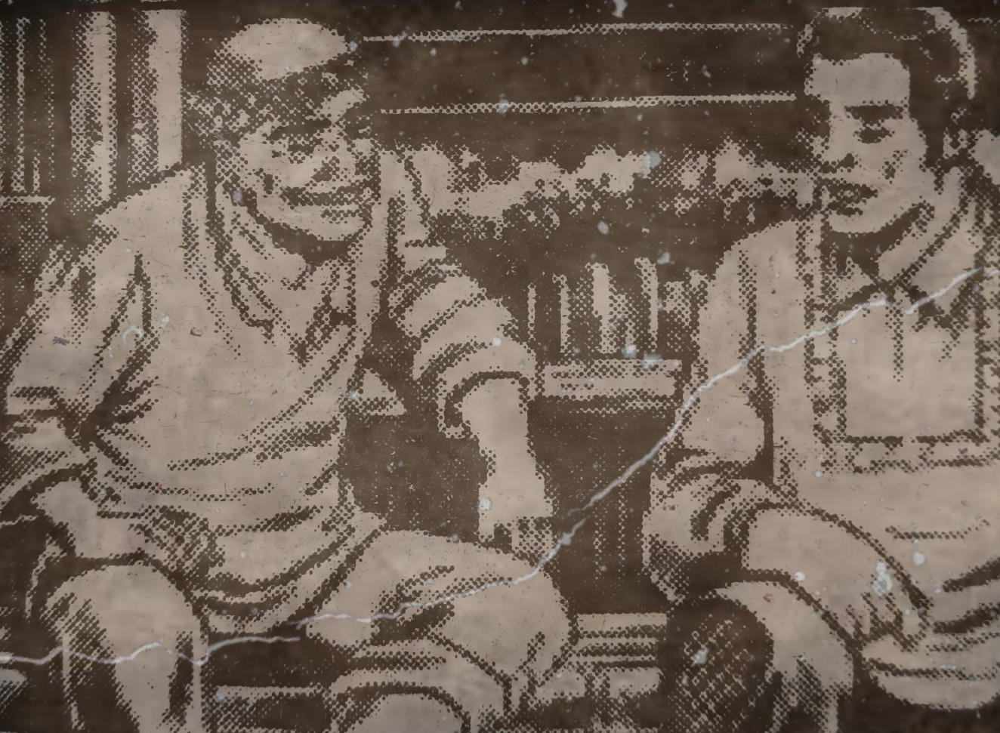
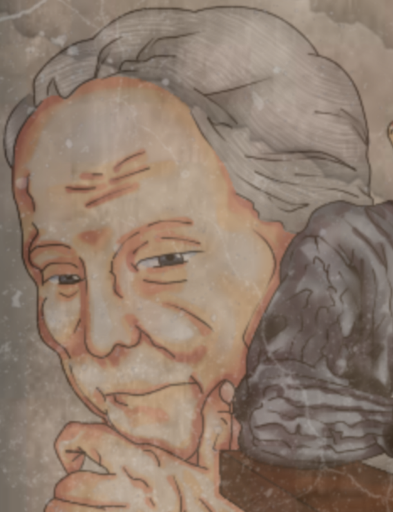
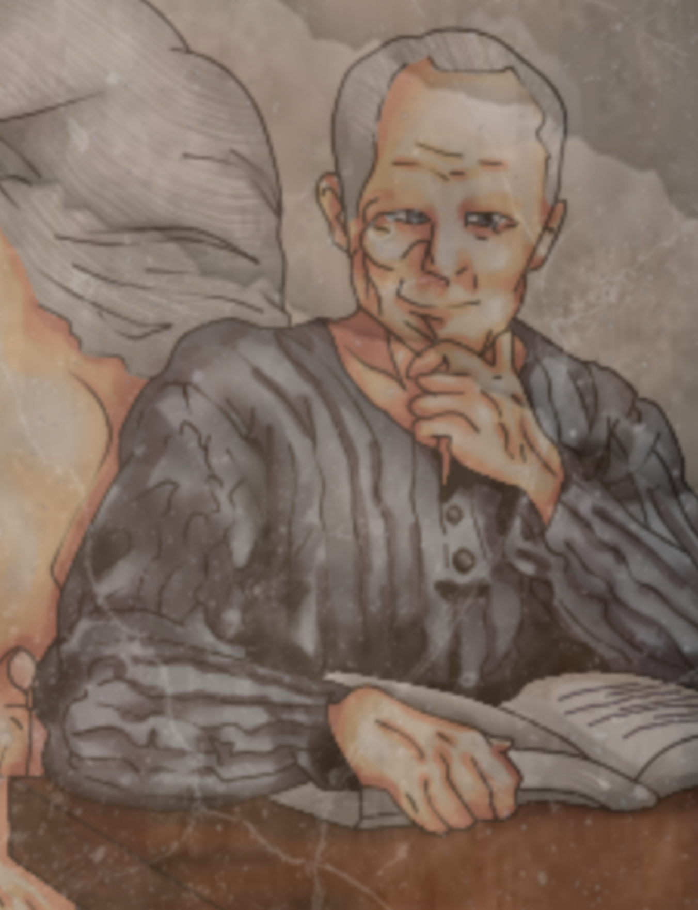

Kabanata 25
Sa Bahay ng Pilosopo

Nagtungo si Crisostomo Ibarra sa tahanan ni Pilosopo Tasyo. Naratnan niyang nagsusulat ang matanda. Pumunta siya sa bahay ng matanda, upang tulad ng dating ginagawa ng kaniyang yumaong ama ay isangguni ang pagpapatayo ng eskwelahang handog niya sa kasintahan. Napamulagat ang pilosopo nang makita ang plano ng itatayong paaralan na mula pa sa Maynila. Nagbigay ng tatlong payo si Pilosopo Tasyo para kay Crisostomo.
Una ay huwag sumagguni sa kaniya sapagkat maaari siyang mapagkamalang baliw katulad ng pagtingin ng marami sa matanda. Ikalawa ay komunsulta dapat ang binata sa kura, alkalde, at sa iba pang may katungkulan ngunit sinabi ng matanda na ang pagkonsulta sa kanila ay hindi nangangahulugan ng pagsunod. Mahalaga lamang na palitawing napagtanungan ang mga ito sa kaniyang dakilang balak. Ikatlo,sinabi niya na kinailangang magyuko si Crisostomo ng ulo sa mga nasa simbahan.
Nakipagtalo nang bahagya ang binata sapagkat ayaw sana niyang magpakababa sa mga prayle na siyang dahilan ng pagkamatay at may gawa ng paglalapastan sa kaniyang ama ngunit matapos ang pagpapaliwanag, napaniwala rin naman kalaunan si Crisostomo. Nagpasalamat at nagpaalam ang binata kay Pilosopo Tasyo. Pupunta ang binatang Ibarra sa kura upang sabihin ang kaniyang balak at banggitin ang tungkol sa babaeng baliw na walang iba kung hindi si Sisa.
Repleksyon
Marapat na ikonsulta natin ang bawat gagawin natin sa mas nakatatanda at mas may kaalaman sa atin. Mas magiging matagumpay ang plano na para sa ikabubuti ng lahat kung ang iyong pinagsabihan ukol dito ay iyong mapagkakatiwalaan.
Mahalagang Tauhan


